지적기사 (2012-08-26 기출문제)
1과목: 지적측량
1. A점의 좌표가(1000.00, 1000.00)이고 AF의 방위각이 60° 00‘ 00“, AP의 거리가 3000m일 때 P점의 좌표는?
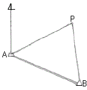
- (1500.00, 1000.00)
- (2476.89, 2611.29)
- (2500.00, 3598.08)
- (3611.28, 3776.09)
(정답률: 알수없음)

2. 그림과 같은 두 직선의 교차점 계산에서 S1의 거리는 얼마인가? (단,
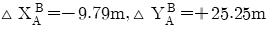
, ∠α=79°26‘18.9“, ∠β=349°25’25.2”)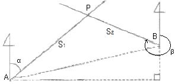
- 14.2522m
- 20.2512m
- 23.0241m
- 32.8751m
(정답률: 30%)
3. 고초원점의 평면직각종횡선수치는 얼마인가?
- X=0m, Y=0m
- X=10000m, Y=30000m
- X=500000m, Y=200000m
- X=550000m, Y=200000m
(정답률: 알수없음)
4. 경위의측량방법에 따른 세부측량을 하는 경우, 토지의 경계가 곡선인 직선으로 연결하는 곡선의 중앙종거의 길이는 얼마로 하는가?
- 5cm 내지 10cm
- 10cm 내지 15cm
- 15cm 내지 20cm
- 20cm 내지 25cm
(정답률: 알수없음)
5. 시ㆍ도지사가 지적삼각점성과를 관리할 때 지적삼각점 성과표에 기록ㆍ관리하여야 하는 사항이 아닌 것은?
- 자오선수차
- 좌표 및 표고
- 소재지와 측량연월일
- 번호 및 위치의 약도
(정답률: 알수없음)
6. 도곽선의 제도에 대한 설명으로 틀린 것은?
- 도면의 윗 방향은 항상 북쪽이 되어야 한다.
- 지적도의 도곽 크기는 가로 40cm, 세로 30cm의 직사각형으로 한다.
- 도곽의 구획은 지적 관련 법령에서 정한 좌표의 원점을 기준으로 하여 정한다.
- 도면에 등록하는 도곽선의 수치는 1mm 크기의 아라비아 숫자로 제도한다.
(정답률: 알수없음)
7. 도선법과 다각망도선법에 따른 지적도근점의 각도 관측에서 도선별 폐색오차의 허용범위 기준이 틀린 것은? (단, n은 폐색변을 포함한 변의 수를 말한다.)
- 방위각법에 따르는 경우:2등도선 ±2√n분 이내
- 배각법에 따르는 경우:2등도선 ±30√n초 이내
- 방위각법에 따르는 경우:1등도선 ±√n분 이내
- 배각법에 따르는 경우:1등도선 ±20√n초 이내
(정답률: 알수없음)
8. 경계점좌표등록부 시행지역에서 지적도근점측량의 성과와 검사 성과의 연결교차는 얼마 이내이어야 하는가?
- 0.10m 이내
- 0.15m 이내
- 0.20m 이내
- 0.25m 이내
(정답률: 알수없음)
9. 표준치보다 0.075m가 짧은 60m짜리 줄자로 거리를 측정한 값이 140m이었을 때 실제거리는?
- 139.075m
- 139.825m
- 140.075m
- 140.175m
(정답률: 70%)
10. 전파기 또는 광파기측량방법에 따라 다각망선도법으로 지적삼각보조점측량을 할 때의 기준이 틀린 것은?
- 삼각형의 각 내각은 30도 이상 150도 이하로 한다.
- 1도선의 점의 수는 기지점과 교점을 포함하여 5개 이하로 한다.
- 1도선의 거리는 4km 이하로 한다.
- 3개 이상의 기지점을 포함한 결합다각방식에 따른다.
(정답률: 50%)
11. 경위의측량방법에 따른 지적삼각점의 수평각 관측을 3대회의 방향관측법에 의할 때 윤곽도가 옳은 것은?
- 0°,90°,180°
- 0°,60°,120°
- 0°,180°,270°
- 0°,30°,60°
(정답률: 알수없음)
12.
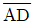
와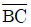
가 평행하고 ∠PQC=90°일 때, □ABQP의 면적이 800m2가 되도록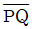
로 분할하려면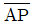
의 길이는 얼마이어야 하는가? (단,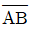
=24.57m, θ=90° 56' 19.2"이며 소수점 이하 2자리까지 산출한다.)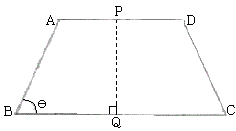
- 29.77m
- 30.77m
- 31.77m
- 32.77m
(정답률: 알수없음)
13. 세부측량을 하는 경우 필지마다 면적을 측정하여야 하는 경우가 아닌 것은?
- 신규등록
- 분할
- 등록전환
- 합병
(정답률: 알수없음)
14. 경위의측량방법에 따른 세부측량을 하여 측량대상 토지의 경계점 간 실측거리가 50m이었을 때 경계점의 좌표에 따라 합산한 거리와의 교차는 얼마 이내이어야 하는가?
- 5cm 이내
- 8cm 이내
- 10cm 이내
- 12cm 이내
(정답률: 알수없음)
15. 경위의측량방법에 따른 지적삼각점의 관측과 계산 기준이 틀린 것은?
- 관측은 10초독 이상의 경위의를 사용한다.
- 수평각 관측은 3대회의 방향관측법에 따른다.
- 수평각의 측각공차에서 1방향각의 공차는 40초 이내로 한다.
- 수평각의 측각공차에서 1측회의 폐색공차는 ±30초 이내로 한다.
(정답률: 알수없음)
16. 축척 1/1200지역에서 평판측량방법에 따른 세부측량을 도선법으로 하여, 0.9mm의 오차가 발생하였을 때 제1지점에 배부할 오차의 도상길이는 얼마인가? (단, 변의 수는 9개이다.)
- 0.1mm
- 1mm
- 12mm
- 120mm
(정답률: 60%)
17. 지적도의 축척이 1/600인 지역의 면적결정방법이 옳은 것은?
- 산출면적이 123.15m2일 때는 123.2m2로 한다.
- 산출면적이 125.55m2일 때는 126m2로 한다.
- 산출면적이 135.25m2일 때는 135.3m2로 한다.
- 산출면적이 146.55m2일 때는 145.5m2로 한다.
(정답률: 알수없음)
18. 세부측량 중 벳셀법에 의한 방식은 다음 중 어디에 해당하는가?
- 전방교회법
- 측방교회법
- 후방교회법
- 방사법
(정답률: 알수없음)
19. 축척변경 시행지역에서 경위의측량방법에 따른 세부측량을 실시할 경우, 측량결과도는 얼마의 축척으로 작성하여야 하는가? (단, 시ㆍ도지사의 승인을 얻는 경우는 고려하지 않는다.)
- 1/500
- 1/1000
- 1/3000
- 1/6000
(정답률: 74%)
20. 분할 후의 각 필지의 면적의 합계와 분할 전 면적과의 오차의 허용범위를 구하는 식으로 옳은 것은? (단, A:오차허용면적, M:축척분모, F:원면적)
- A=0.0232ㆍM√F
- A=0.0262ㆍM√F
- A=0.023ㆍM√F
- A=0.026ㆍM√F
(정답률: 알수없음)
2과목: 응용측량
21. 수직 터널에 의하여 지상과 지하의 측량을 연결할 때의 수선측량에 대한 설명으로 틀린 것은?
- 깊은 수직 터널에는 강선에 50~60kg정도의 추를 매단다.
- 추를 드리울 때, 깊은 수직 터널에서는 보통 피아노선이 이용된다.
- 수직 터널 밑에는 물이나 기름을 담은 물통을 설치하고 내린 후가 그 물통 속에서 동요하지 않게 한다.
- 수직 터널 밑에서 수선의 위치를 결정하는 데는 수선이 완전 정지하는 것을 기다린 후 1회 관측값으로 결정한다.
(정답률: 알수없음)
22. 20km×10km의 지형을 1/40000의 항공사진으로 촬영할 때 사진매수는? (단, 종중복도=60%, 횡중복도 30%, 안전율=1.3, 사진크기 23cm×23cm)
- 9장
- 11장
- 18장
- 25장
(정답률: 알수없음)
23. 사진측량에서 높이가 220m인 탑의 변위가 16mm, 이 탑의 윗부분에서 연직점까지의 거리가 48mm로 사진 상에 나타났다. 이 사진에서 굴뚝의 변위가 9mm이고, 굴뚝의 윗부분이 연직점으로부터 72mm 떨어져 있었다면 이 굴뚝의 높이는?
- 80m
- 83m
- 85m
- 90m
(정답률: 알수없음)
24. 수준측량 용어로 이 점의 오차는 다른 점에 영향을 주지 않으며 이 점만의 표고를 관측하기 위한 관측점을 의미하는 것은?
- 기준점
- 측점
- 이기점
- 중간점
(정답률: 알수없음)
25. 수준기의 감도가 5"인 레벨(Level)을 사용하여 50m 떨어진 표척을 시준할 때 발생하는 시준값의 차이는?
- ±0.5mm
- ±1.2mm
- ±7.3mm
- ±10.5mm
(정답률: 70%)
26. 그림과 같이 측점 A의 밑에 기계를 세워 천장에 설치된 측점 A, B를 관측하였을 때 두 점의 높이차(H)는?
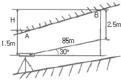
- 41.5m
- 43.5m
- 74.6m
- 77.6m
(정답률: 알수없음)
27. 그림과 같이 2개의 산꼭대기가 서로 만나는 곳으로 좋은 교통로가 되는 고객부분을 무엇이라 하는가?
- 요지
- 능선
- 안부
- 경사변환점
(정답률: 알수없음)
28. GPS 스태틱측량을 실시한 결과 거리오차의 크기가 0.⑤m이고 PDOP이 4일 경우 측위오차의 크기는?
- 0.2m
- 0.5m
- 1.0m
- 1.5m
(정답률: 알수없음)
29. 사진의 크기가 18cm×18cm인 사진기로 평탄한 지역을 비행고도 2000m로 촬영하여 연직사진을 얻었을 경우 촬영면적이 21.16km2이면 이 사진기의 초점거리는?
- 78mm
- 103mm
- 150mm
- 210mm
(정답률: 64%)
30. GPS의 구성요소 중 위성을 추적하여 위성의 궤도와 정밀시간을 유지하고 관련 정보를 송신하는 역할을 담당하는 부문은?
- 우주부문
- 제어부문
- 수신부문
- 사용자부문
(정답률: 알수없음)
31. 번들조정법(광속조정법)에서 절대좌표를 구하기 위하여 이용되는 것은?
- 사진좌표
- 모델좌표
- 지상좌표
- 스트립좌표
(정답률: 알수없음)
32. 노선측량에서 단곡선의 설치방법 중 접선과 현이 이루는 각을 이용하여 곡선을 설치하는 방법은?
- 편각법
- 중앙 종거법
- 장현 지거법
- 좌표에 의한 설치법
(정답률: 알수없음)
33. 수준측량에서 중간시가 많을 경우 가장 많이 편리한 야장기입법은?
- 승강식
- 고차식
- 기고식
- 하강식
(정답률: 알수없음)
34. 그림과 같이 단곡선을 설치할 경우 곡률반지름을 R, 교각을 I라고 할 때 장현의 길이 AB를 계산하는 식으로 옳은 것은?
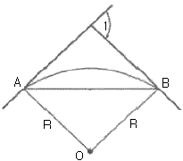
- AB=2Rㆍcos I/2
- AB=Rㆍsin I/2
- AB=2Rㆍtan I/2
- AB=2Rㆍsin I/2
(정답률: 알수없음)
35. 지도작성 측량시 해안선의 기준이 되는 것은?
- 측정 당시 수면
- 평균 해수면
- 최고 저조면
- 최고 고조면
(정답률: 알수없음)
36. 완화곡선(緩和曲線)에 대한 설명으로 옳지 않은 것은?
- 완화곡선의 반지름은 무한대부터 시작하여 점차 감소하여 원의 반지름이 된다.
- 우리나라 도로에서는 완화곡선으로 클로소이드 곡선을 주로 사용한다.
- 완화곡선의 곡률은 일정한 값부터 점차로 감소하여 0이 된다.
- 완화곡선의 접선은 시점에서 직선에 접한다.
(정답률: 알수없음)
37. 완곡선에서 교각(I)이 90°일 때, 외 할(E)이 25m라고 하면 곡선 반지름은?
- 35.6m
- 46.2m
- 60.4m
- 93.7m
(정답률: 50%)
38. 수치사진측량의 수치지형모형자료의 자료기반구축에서 영상소를 재배열 할 경우에 주로 이용하는 내삽법과 거리가 먼 것은?
- 공액 보간법
- 최근린 보간법
- 공일차 보간법
- 공삼차 보간법
(정답률: 알수없음)
39. GPS 관측에 대한 설명으로 옳지 않은 것은?
- C/A코드 및 P코드로 의사거리를 측정하여 관측점의 위치를 계산한다.
- L1 주파의 위상(L1 Carrier Phase) 측정자료를 이용, 정수파수의 정수치(Integer Number)를 구함으로서 mm또는 cm 정도의 정밀한 기선벡터를 계산할 수 있다.
- L1 주파의 위상(L1 Carrier Phase) 측정자료만으로 전리층 오차를 보정할 수 있다.
- L1, L2 2주파의 위상측정자료를 이용하면 L1 1주파만 이용할 때보다 정수파수의 정수치(Integer Number)를 정확히 얻을 수 있다.
(정답률: 알수없음)
40. 등고선에 대한 설명으로 옳지 않은 것은?
- 계곡선 간격이 100m 이면 주곡선 간격은 20m이다.
- 계곡선은 주곡선보다 굵은 실선으로 그린다.
- 주곡선 간격이 10m 이면 1:10000 지형도이다.
- 간곡선 간격이 2.5m이면 주곡선 간격은 5m이다.
(정답률: 50%)
3과목: 토지정보체계론
41. 토지정보 입력시 스캐닝에 의한 방법에 대한 설명으로 틀린 것은?
- 지적도면 자료를 입력하는 방법이다.
- 지도상의 정보를 신속하게 입력할 수 있다.
- 디지타이저를 이용한 입력방법보다 편리하다.
- 벡터 방식의 입력방법이다.
(정답률: 42%)
42. LIS에서 DBMS의 개념을 적용함으로서 얻어지는 장점이 아닌 것은?
- 데이터의 중복성 베제
- 데이터의 일관성 유지
- 데이터의 비표준화
- 데이터의 보안성 유지
(정답률: 알수없음)
43. 벡터자료를 래스터자료로 자료변환하는 것을 무엇이라 하는가?
- 벡터라이징
- 래스터라이징
- 필터링
- 섹션화
(정답률: 알수없음)
44. 자료에 대한 내용, 품질, 사용조건 등의 정보를 제공하는 것으로 데이터의 이력서라고도 하는 것은?
- 레이어
- SDTS
- 메타데이터
- 인덱스
(정답률: 알수없음)
45. 사용자권한 등록파일에 등록하는 사용자번호 및 비밀번호 등에 대한 설명으로 옳은 것은?
- 사용자의 비밀번호가 누설될 우려가 있는 때에는 즉시 이를 변경하여야 한다.
- 사용자의 비밀번호는 6자리부터 10자리까지의 범위에서 지적소관청별로 일괄 부여한다.
- 사용자번호는 전국적으로 일련번호를 부여한다.
- 다른 사용자권한 등록관리청으로 소속이 변경된 경우 사용자번호를 변경된 관리청으로 이관하여 관리한다.
(정답률: 알수없음)
46. GIS의 자료 분석 과정 중, 도형자료와 속성자료가 구축된 레이어 간의 정보를 합성하거나 수학적 변환기능을 이용하여 정보를 통합하는 분석 방법은?
- 중첩분석
- 표면분석
- 합성분석
- 검색분석
(정답률: 알수없음)
47. 지적전산화의 목적으로 가장 거리가 먼 것은?
- 지적민원처리의 신속성
- 전산화를 통한 중앙통제
- 관련업무의 능률과 정확도 향상
- 토지관련 정책자료의 다목적 활용
(정답률: 알수없음)
48. SQL언어 중 데이터조작어(DML)에 해당하지 않는 것은?
- INSERT
- UPDATE
- DELETE
- DROP
(정답률: 67%)
49. 국가나 지방자치단체가 지저전산자료를 이용하는 경우 사용료의 납부방법으로 옳은 것은?
- 사용료를 수입증지로 납부한다.
- 사용료를 면제한다.
- 규정된 사용료의 절반을 현금으로 납부한다.
- 사용료를 수입인지로 납부한다.
(정답률: 알수없음)
50. 토지정보시스템(LIS)의 구축 목적으로 옳지 않은 것은?
- 다목적 지정정보체계 구축
- 지적 관련 민원의 신속ㆍ정확한 처리
- 지적재조사의 기반 확보
- 도시기반시설의 유지 및 관리
(정답률: 58%)
51. 다음 중 래스터데이터의 자료 압축 방법이 아닌 것은?
- 런렝스코드방법
- 체인코드방법
- 블록코드방법
- 트랜스코드방법
(정답률: 알수없음)
52. 벡터데이터에 비해 래스터데이터가 갖는 장점으로 틀린 것은?
- 자료구조가 단순하다.
- 객체의 크기와 방향성에 정보를 가지고 있다.
- 스캐닝이나 위성영상, 디지털 카메라에 의해 쉽게 자료를 취득할 수 있다.
- 격자의 크기 및 형태가 동일하므로 시뮬레이션에는 용이하다.
(정답률: 알수없음)
53. 스캐닝 방식을 이용하여 지적전산 파일을 생성하고자 한다. 이 때 스캐너의 해상도를 표현하는 단위로 맞는 것은?
- CELL
- DOT
- DPI
- RADIAN
(정답률: 70%)
54. 도로, 상하수도, 전기시설 등의 자료를 수치 지도화하고 시설물의 속성을 입력하여 데이터베이스를 구축함으로써 시설물 관리활동을 효율적으로 지원하는 시스템은?
- FM(Facility management)
- LIS(Land Information System)
- UIS(Urban Information System)
- CAD(Computer-Aided Drafting)
(정답률: 28%)
55. 다음 중 PBLIS를 구성하는 시스템에 해당하지 않는 것은?
- 지적측량성과작성시스템
- 지적측량시스템
- 지적행정정보시스템
- 지적공부관리시스템
(정답률: 알수없음)
56. 토지정보시스템의 도형자료 입력에 주로 사용하는 방식이 아닌 것은?
- 레이아웃(layout) 방식
- 스캐닝(scanning) 방식
- COGO(Coordinate geometry) 방식
- 디지타이징(digitizing) 방식
(정답률: 알수없음)
57. 위상관계의 특성과 관계가 먼 것은?
- 인접성
- 연결성
- 단순성
- 포함성
(정답률: 알수없음)
58. 한국토지정보시스템에 대한 설명으로 옳은 것은?
- PBLIS와 LMIS를 통합하여 새로 구축한 시스템이다.
- 20⑤년부터 국토지리정보원이 개발에 착수하였다.
- 한국토지정보시스템은 National Geographic Information System)의 약자로 NGIS라 한다.
- 한국토지정보시스템은 지적공부관리시스템과 지적측량 성과작성시스템으로만 구성되어 있다.
(정답률: 알수없음)
59. 농지정리사업시행지역의 확정측량작업을 완료하고 행정구역도면을 출력할 때의 출력장비로 옳은 것은?
- USB
- 스캐너
- 디지타이저
- 플로터
(정답률: 알수없음)
60. 래스터이미지를 벡터화하는 과정에서 셀에 대상물을 속성값을 입력하는 방법 중 셀의 50% 이상을 차지하는 대상물이 그 셀 값에 부여되는 방법은?
- 현존 유ㆍ무(Presence/absence) 방법
- 중심 셀(centroid of cell) 방법
- 지배적 유형(dominant type) 방법
- 과반수(half type) 방법
(정답률: 알수없음)
4과목: 지적학
61. 다음 중 가계(家契)제도와 지계(地契)제도에 대한 설명이 틀린 것은?
- 지계제도에서 전답을 매매하는 경우는 관계(官契)를 받아야 한다.
- 지계는 외국인의 토지 소유를 장려하는 조항을 삽입하고 있다.
- 지계는 본질적으로 입안과 같은 것으로 근대화된 것이다.
- 가계제도는 지계제도보다 10년 앞서 시행되었다.
(정답률: 알수없음)
62. 개개의 토지를 중심으로 토지 등록부를 편성하는 것으로, 우리나라의 토지대장에서 사용하는 등기의 편성유형은?
- 물적 편성주의
- 인적 편성주의
- 연대적 편성주의
- 물적ㆍ인적 편성주의
(정답률: 알수없음)
63. 신라시대에 시행한 토지측량 방식으로 토지를 여러 형태로 구분하여 측량하기 쉽도록 하였던 것은?
- 경무법
- 연산법
- 결부제
- 구장산술
(정답률: 알수없음)
64. 조선지세령(朝鮮地稅令)에 관한 내용으로 틀린 것은?
- 1943년에 제정ㆍ공포되어 조선총독부 시대에 시행되었다.
- 지적에 관한 사항과 지세에 관한 사항을 동시에 규정하였다.
- 조선임야조사령이 제정되기 전까지 과도적으로 적용되었다.
- 전문 7장과 부칙을 포함한 95개 조문으로 되어 있다.
(정답률: 40%)
65. 토지를 지적공부에 등록하기 위하여 우리나라에서 적용하고 있는 지적의 원리에 해당하지 않는 것은?
- 국정주의
- 소극적 등록주의
- 실질적 심사주의
- 형식주의
(정답률: 알수없음)
66. 고려 초기의 기록상으로 남아 있는 우리나라 최초의 토지조사측량지는?
- 송량경
- 봉휴
- 산사
- 판도사
(정답률: 50%)
67. 토지의 등록주의에 대한 내용으로 틀린 것은?
- 등록할 가치가 있는 토지만을 등록한다.
- 지적공부에 미등록된 토지는 토지등록주의의 미비다.
- 전 국토는 지적공부에 등록되어야 한다.
- 토지의 이동이 지적공부에 등록되지 않으면 공시의 효력이 없다.
(정답률: 91%)
68. 토렌스시스템의 기본 이론 중 “토지권리증서의 등록은 토지의 거래사실을 이론의 여지없이 완벽하게 반영한다.”는 원칙을 말하는 것은?
- 사전이론
- 커튼이론
- 보험이론
- 거울이론
(정답률: 알수없음)
69. 아래와 같은 특징을 갖는 지적제도를 시행한 시대는?
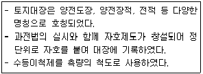
- 고구려
- 백제
- 조선
- 고려
(정답률: 알수없음)
70. 조선시대 매매에 따른 일종의 공증제도로 토지를 매매할 때 소유권 이전에 관에서 공적으로 증명하여 발급한 서류는?
- 명문(明文)
- 문권(文券)
- 입안(立案)
- 문기(文記)
(정답률: 알수없음)
71. 고려시대에 양전을 담당한 중앙기구로서의 특별관서가 아닌 것은?
- 급전도감
- 정치도감
- 절급도감
- 사출도감
(정답률: 알수없음)
72. 백문매매(白文賣買)에 대한 설명으로 옳은 것은?
- 오늘날의 토지대장에 해당한다.
- 입안을 받지 않은 계약서를 말한다.
- 조선건국 초기에 성행되었던 토지등기제도이 일종이다.
- 구문기에서 소유자란이 없는 것을 뜻한다.
(정답률: 알수없음)
73. 스위스, 네덜란스에서 채택하고 있는 지번 표기의 유형으로 지번의 완전한 변경 내용을 알 수 있는 보조장부의 보존이 필요한 것은?
- 순차식 지번제도
- 자유식 지번제도
- 분수식 지번제도
- 복합식 지번제도
(정답률: 64%)
74. 조세, 토지관리 및 지적사무를 담당하였던 백제의 지적담당기관은?
- 조부
- 내두좌평
- 공부
- 호조
(정답률: 70%)
75. 지적 제도의 발달 단계별 특징의 연결이 틀린 것은?
- 세지적-면적 본위의 과세지적
- 법지적-위치 본위의 소유지적
- 시설지적-3차원의 입체지적
- 다목적지적-종합지적
(정답률: 알수없음)
76. 지적공부에 등록하는 경계에 있어, 경계불가분의 원칙이 적용되는 가장 큰 이유는?
- 면적의 크기에 따르므로
- 설치자의 소속으로 결정하기 때문에
- 경계의 중앙 선택 원칙 때문에
- 경계선은 길이와 위치만 존재하기 때문에
(정답률: 알수없음)
77. 일본의 지적 관령으로 옳은 것은?
- 지적법
- 부동산등기법
- 국토기본법
- 지가공시법
(정답률: 80%)
78. 지적에 관한 사항을 모든 사람이 정당하게 이용할 수 있도록 공개하며, 소유권, 기타 물권에 대해서도 제3자로부터 보호를 받고 배타적인 소유권의 인정을 받기 위한 것과 관련한 것은?
- 국정주의
- 형식주의
- 공개주의
- 증명주의
(정답률: 84%)
79. 이기가 해학유서에서 수등이척제에 대한 개선으로 주장한 제도로서, 전지(田地)를 측량할 때 정방형의 눈들을 가진 그물을 사용하여 면적을 산출하는 방법은?
- 일자오결제
- 망척제
- 결부제
- 방전제
(정답률: 알수없음)
80. 토지조사사업의 특징으로 틀린 것은?
- 지적의 교육에 주력하였다.
- 사업의 조사, 준비, 홍보에 철저를 기하였다.
- 역둔토 등을 사유화하여 토지소유권을 인정하였다.
- 도로, 하천, 구거 등을 토지조사사업에서 제외하였다.
(정답률: 알수없음)
5과목: 지적관계법규
81. 부동산등기법에 따라 미등기의 토지에 관한 소유권 보존 등기를 신청할 수 없는 자는?
- 토지대장에 최초의 소유자로 등록되어 있는 자
- 확정판결에 의하여 자기의 소유권을 증명하는 자
- 수용으로 인하여 소유권을 취득하였음을 증명하는 자
- 지적소관청의 직원이 현지를 확인하여 자기의 소유권을 증명 받은 자
(정답률: 알수없음)
82. 다음 중 도시ㆍ군관리계획에 해당하지 않는 것은?
- 기반시설의 설치ㆍ정비 또는 개량에 관한 계획
- 기본적인 공간구조와 장기발전방향에 대한 계획
- 도시개발사업이나 정비사업에 관한 계획
- 용도지역ㆍ용도지구의 지정 또는 변경에 관한 계획
(정답률: 46%)
83. 지적소관청이 축척변경에 관한 측량을 완료하였을 때 시행공고일 현재의 지적공부상의 면적과 측량 후의 면적을 비교하여 그 변동사항을 표시하여 작성하는 것은?
- 축척변경 지번별 조서
- 확정측량조서
- 등록전환조서
- 지적공부조서
(정답률: 47%)
84. 국토의 계획 및 이용에 관한 법률상 대통령령으로 정하는 기반시설이 아닌 것은?
- 도로, 철도, 항만, 공항, 주차장 등 교통시설
- 유통업무설비, 수도ㆍ전기ㆍ가스공급설비, 방송ㆍ통신시설, 공동구 등 유통ㆍ공급시설
- 화장시설, 공동묘지, 봉안시설 등 보건위생시설
- 광장, 놀이공원, 문화시설 등 위락시설
(정답률: 알수없음)
85. 지저소관청이 토지이동현황 조사계획을 수립하는 단위는?
- 도 단위
- 시 단위
- 시ㆍ도 단위
- 시ㆍ군ㆍ구 단위
(정답률: 알수없음)
86. 지적기준점좌표지의 설치ㆍ관리 등에 관한 설명이 옳은 것은?
- 지적삼각점표지의 점간거리는 평균 4km 이상 10km이하로 한다.
- 다각망도선법에 따르는 경우를 제외하고 지적도근점표지의 점간거리는 평균 100m 이상 500m 이하로 한다.
- 지적소관청은 연 1회 이상 지적기준점표지의 이상 유무를 조사하여야 한다.
- 지적기준점표지가 멸실되거나 훼손되었을 때에는 시ㆍ도지사는 이를 다시 설치하거나 보수하여야 한다.
(정답률: 알수없음)
87. 축척변경위원회에 대한 설명이 틀린 것은?
- 위원장은 위원 중에서 지적소관청이 지명한다.
- 위원회는 10명 이상 20면 이하의 위원으로 구성하되, 위원의 2분의 1 이상을 토지소유자로 하여야 한다.
- 위원은 해당 축척변경 시행지역의 토지소유자로서 지역사정에 정통한 사람, 지적에 관하여 전문지식을 가진 사람중에서 지적소관청이 위촉한다.
- 축척변경 시행지역의 토지소유자가 5명 이하일 때에는 토지소유자 전원을 위원으로 위촉하여야 한다.
(정답률: 37%)
88. 토지의 이동 사항 중 신청기간이 다른 하나는?
- 등록전환신청
- 지목변경신청
- 신규등록신청
- 바다로 된 토지의 등록말소신청
(정답률: 알수없음)
89. 다음 중 지적공부에 해당하지 않는 것은?
- 지적도
- 일람도
- 공유지연명부
- 대지권등록부
(정답률: 알수없음)
90. 토지등의 출입 등에 따른 손실보상에 관하여 손실을 보상 할 자와 손실을 받은 자의 협의가 성립되지 않거나 협의를 할 수 없는 경우 재결을 신청할 수 있는 곳은?
- 중앙지적위원회
- 지방지적위원회
- 지적소관청
- 관할 토지수용위원회
(정답률: 알수없음)
91. 도시개발사업 등이 준공되기 전에 사업시행자가 지번부여신청을 할 경우 지적소관청은 무엇을 기준으로 지번을 부여 하여야 하는가?
- 측량준비도
- 지번별조서
- 사업계획도
- 확정측량 결과도
(정답률: 알수없음)
92. 부동산등기법상 등기관이 토지 등기기록의 표제부에 기록 하여야 하는 사항이 아닌 것은?
- 등기원인
- 접수연월일
- 도면의 번호
- 표시번호
(정답률: 알수없음)
93. 토지거래계약에 관한 허가구역에 대한 설명이 옳은 것은?
- 행정안전부장관이 허가구역을 지정할 수 있다.
- 10년 이내의 기간을 정하여 지정한다.
- 허가구역으로 지정하려면 중앙도시계획위원회의 심의를 거쳐야 한다.
- 허가구역의 지정은 허가구역의 지정을 공고한 날부터 7일 후에 그 효력이 발생한다.
(정답률: 알수없음)
94. 부동산등기법상 토지가 멸실될 경우 그 토지 소유권의 등기명의인은 그 사실이 있는 때부터 얼마 이내에 그 등기를 신청하여야 하는가?
- 3개월 이내
- 1개월 이내
- 15일 이내
- 7일 이내
(정답률: 알수없음)
95. 국토의 계획 및 이용에 관한 법률에 따른 용도지역에 대한 설명으로 옳은 것은?
- 용도지역의 지정은 도시ㆍ군기본계획으로 결정한다.
- 도시지역은 주거지역, 상업지역, 공업지역, 녹지지역 및 보존지역으로 구분한다.
- 용도지역은 도시, 준도시지역, 농림지역, 그리고 자연환경보전지역으로 구분한다.
- 자연환경보전지역은 자연환경ㆍ수자원ㆍ해안ㆍ생태계ㆍ상수원 및 문화재의 보전과 수산자원의 보호ㆍ육성 등을 위하여 필요한 지역이다.
(정답률: 알수없음)
96. 축척변경에 따른 청산금을 산출한 결과 증가된 면적에 대한 청산금의 합계와 감소된 면적에 대한 청산금의 합계에 차액이 생긴 경우 부족액은 누가 부담하여야 하는가?
- 토지소유자
- 지방자치단체
- 대한지적공사
- 국토해양부
(정답률: 77%)
97. 다음 중 지목의 구분이 틀린 것은?
- 목장용지-축산업 및 낙농업을 하기 위하여 초지를 조성한 토지
- 대-박물관ㆍ극장ㆍ미술관 등 문화시설과 이에 접속된 정원 및 부속시설물의 부지
- 학교용지-학교의 교사와 이에 접속된 체육장 등 부속시설물의 부지
- 도로-아파트ㆍ공장 등 단일 용도의 일정한 단지 안에 설치된 통로
(정답률: 알수없음)
98. 대지권등록부의 등록사항에 해당하지 않는 것은?
- 면적
- 지번
- 대지권 비율
- 토지의 고유번호
(정답률: 알수없음)
99. 지적공부의 복구 및 복구절차 등에 관한 내용이 틀린 것은?
- 지적공부를 복구할 때에는 멸실ㆍ훼손 당시의 지적공부와 가장 부합된다고 인정되는 관계 자료에 따라 토지의 표시에 관한 사항을 복구하여야 한다.
- 지적소관청은 지적공부의 전부 또는 일부가 멸실되거나 훼손된 경우에는 지체없이 이를 복구하여야 한다.
- 소유자에 관한 사랑은 부동산등기부나 법원의 확정판결에 따라 복구하여야만 한다.
- 지적소관청은 지적공부를 복구하려는 경우에는 복구하려는 토지의 표시 등을 시ㆍ군ㆍ구 게시판 및 인터넷 홈페이지에 7일 이상 게시하여야 한다.
(정답률: 알수없음)
100. 지적소관청으로부터 측량성과에 대한 검사를 받지 않아도 되는 것만을 옳게 나열한 것은?
- 지적기준측량, 분할측량
- 지적공부복구측량, 축척변경측량
- 경계복원측량, 지적현황측량
- 신규등록측량, 등록전환측량
(정답률: 알수없음)
이제, 삼각형 AFP에서 각 A의 좌표는 (1000.00, 1000.00)이고, 각 F의 좌표는 (1000.00 + 1500cos30°, 1000.00 + 1500sin30°) = (1750.00, 1250.00)입니다.
또한, 삼각형 AFP에서 각 P의 좌표는 (x, y)라고 가정하면, AP의 길이는 √((x-1000.00)² + (y-1000.00)²) = 3000이므로, (x-1000.00)² + (y-1000.00)² = 9000000입니다.
마지막으로, 삼각형 AFP에서 각 P의 좌표는 선분 AF와 수직이므로, P의 y좌표는 F의 y좌표와 같습니다. 따라서, y = 1250.00입니다.
이제, 위의 두 식을 이용하여 x를 구할 수 있습니다. (x-1000.00)² + (1250.00-1000.00)² = 9000000이므로, (x-1000.00)² = 5625000이고, x = 1000.00 ± 2500.00√3입니다.
하지만, P는 A와 같은 사분면에 있으므로 x는 1000.00 + 2500.00√3입니다. 따라서, P의 좌표는 (1000.00 + 2500.00√3, 1250.00)입니다. 이를 계산하면, (2500.00, 3598.08)이 됩니다.